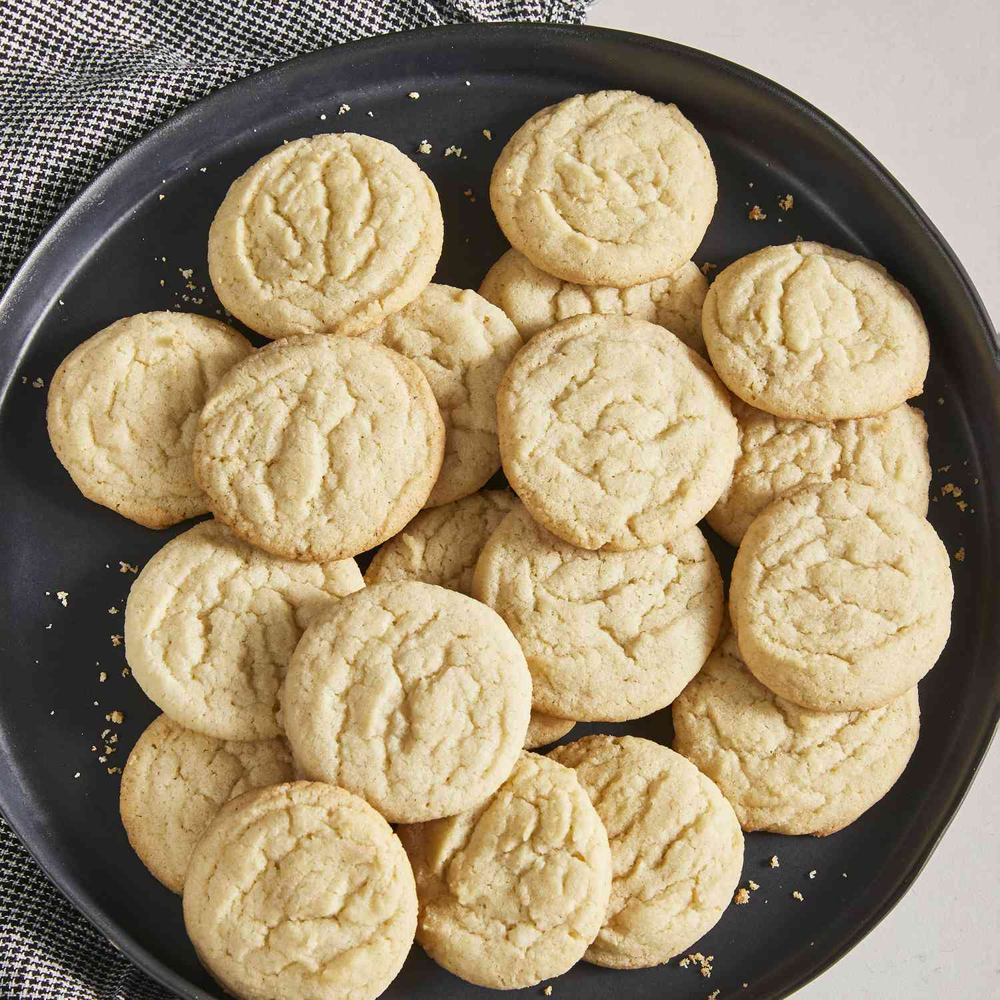

Sugar Cookie Recipe

Description
Are you in need of something sweet to satisfy your sweet tooth? Look no further! This seven-ingredient sugar cookie recipe will be the best sugar cookies you'll ever make! The recipe marries the simplicity of sugar, butter, and flour in a way that's nothing short of magical. Crispy on the edges and a soft center, this cookie is utterly irresistable.
Ingredients
- 2 3/4 all-purpose flour
- 1 teaspoon of baking soda
- 1/2 teaspoon baking powder
- 1 cup butter, softened
- 1 1/2 cups white sugar
- 1 egg
- 1 teaspoon vanilla
Steps
- Preheat oven to 375 degrees F (190 degrees C)
- Stir flour, baking soda, and baking powder in a small bowl
- In a separate bowl, beat sugar and butter together with an electric mixer until smooth
- Beat in egg and vanilla
- Gradually blend in flour mixture
- Roll dough into balls and place them 2 inches apart on ungreased baking sheet
- Bake for 8 to 10 minutes
- Cool before removing from baking sheet
Back to Home